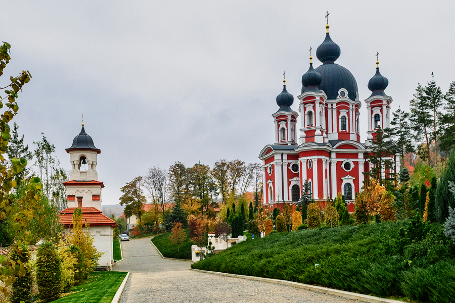

Mănăstirea Curchi
Mănăstirea Curchi este o mănăstire de călugări din Republica Moldova, unul din cele mai însemnate monumente ale arhitecturii basarabene. Este situată în Codrii Orheiului, pe teritoriul satului Curchi, raionul Orhei. Ca ansamblu arhitectural s-a constituit în secolele XVIII - XIX. Este compusă din cinci biserici, două clădiri cu chilii, stăreție, mai multe încăperi auxiliare, o livadă, un schit cu arhondaric aflat la 500 m de Mănăstire și un bazin de piatră. Biserica "Nașterea Maicii Domnului", construită în 1775 de către Iordache Curchi, este un exemplu de stil neobizantin, iar biserica "Sfântul Nicolae" (1808 - 1810) este construită în stilul clasicismului cu elemente de baroc. Tot ansamblul e înconjurat de un zid înalt de piatră. În perioada sovietică mănăstirea a fost transformată în spital de psihiatrie.
Din anul 2002 la mănăstire au avut loc lucrări de reparație și renovare, care s-au finalizat abia spre anul 2015 de Esanu Vladislav.Pe teritoriul Mănăstirii viețuiesc circa 30 de călugări.
Sfințit arhimandrit (titlu onoric = stareț) al acestei Mănăstiri este [ÎPS Vladimir Cantarean, Mitropolit al Chișinăului și al Întregii Moldove], dar stăreția de facto a a Mănăstirii Curchi este asiguratăde [PS Siluan Șalari, episcop de Orhei, vicar al Mitropoliei Chișinăului și Întregii Moldove], Președinte al Sectorului Sinodal Vață Monahală din cadrul aceleiași Mitropolii, căruia pentru meritele în domeniul credinței creștine i-a fost conferit titlul onorific de Om emerit.
Mănăstirea Curchi, cu hramul “Nașterea Maicii Domnului”, este una din cele mai însemnate monumente ale arhitecturii moldovenești din Basarabia. Ea e așezată în județul Orhei pe valea apei Vaticiu, la o depărtare de 12 km de orașul Orhei și la 55 km de Chișinău, capitala Republicii Moldova. Mănăstirea e situată în partea dreaptă a văii Vatici la poalele pădurii ce poartă denumirea de „Codru”, care în același timp este prelungirea codrilor Orheiului pe unde au trecut arcașii lui Ștefan cel Mare.
Mănăstirea are un trecut cultural și religios de două secole și jumătate. Această mănăstire se considera pe timpuri, cât și în prezent, a fi “cea mai frumoasă și mai vestită mănăstire din Basarabia”. Potrivit unor legende, Mănăstirea Curchi, a fost întemeiată de către Ștefan cel Mare, iar ca ansamblu arhitectural s-a format mai târziu, în veacurile XVIII-XIX. Dar această versiune este greu de verificat, pentru că nu are un suport documentar. Cea mai plauzibilă versiune rămâne că Mănăstirea Curchi a fost întemeiată în anul 1773 de către frații Iordache și Mihail Curchi, care la început au construit un modest schit din lemn, iar mai târziu au zidit primele biserici din piatră. Despre cei doi frați se știe că au îmbrățișat apoi viața monahicească, purtând numele de monah Ioan și, respectiv, Manasie. Așezarea Mănăstirii Curchi e de o frumusețe rară, datorită livezilor și pădurii ce o înconjoară, dându-i tonul verde, din care apar bisericile și clădirile albe ca niște puncte strălucitoare, atrăgând privirile tuturor trecătorilor și vizitatorilor care rămân fermecați de frumusețea locului, a cărui imagine se întipărește adânc în sufletul lor.
Din anul 2002 la mănăstire au avut loc lucrări de reparație și renovare, care s-au finalizat abia spre anul 2015 de Esanu Vladislav.Pe teritoriul Mănăstirii viețuiesc circa 30 de călugări.
Sfințit arhimandrit (titlu onoric = stareț) al acestei Mănăstiri este [ÎPS Vladimir Cantarean, Mitropolit al Chișinăului și al Întregii Moldove], dar stăreția de facto a a Mănăstirii Curchi este asiguratăde [PS Siluan Șalari, episcop de Orhei, vicar al Mitropoliei Chișinăului și Întregii Moldove], Președinte al Sectorului Sinodal Vață Monahală din cadrul aceleiași Mitropolii, căruia pentru meritele în domeniul credinței creștine i-a fost conferit titlul onorific de Om emerit.
Mănăstirea Curchi, cu hramul “Nașterea Maicii Domnului”, este una din cele mai însemnate monumente ale arhitecturii moldovenești din Basarabia. Ea e așezată în județul Orhei pe valea apei Vaticiu, la o depărtare de 12 km de orașul Orhei și la 55 km de Chișinău, capitala Republicii Moldova. Mănăstirea e situată în partea dreaptă a văii Vatici la poalele pădurii ce poartă denumirea de „Codru”, care în același timp este prelungirea codrilor Orheiului pe unde au trecut arcașii lui Ștefan cel Mare.
Mănăstirea are un trecut cultural și religios de două secole și jumătate. Această mănăstire se considera pe timpuri, cât și în prezent, a fi “cea mai frumoasă și mai vestită mănăstire din Basarabia”. Potrivit unor legende, Mănăstirea Curchi, a fost întemeiată de către Ștefan cel Mare, iar ca ansamblu arhitectural s-a format mai târziu, în veacurile XVIII-XIX. Dar această versiune este greu de verificat, pentru că nu are un suport documentar. Cea mai plauzibilă versiune rămâne că Mănăstirea Curchi a fost întemeiată în anul 1773 de către frații Iordache și Mihail Curchi, care la început au construit un modest schit din lemn, iar mai târziu au zidit primele biserici din piatră. Despre cei doi frați se știe că au îmbrățișat apoi viața monahicească, purtând numele de monah Ioan și, respectiv, Manasie. Așezarea Mănăstirii Curchi e de o frumusețe rară, datorită livezilor și pădurii ce o înconjoară, dându-i tonul verde, din care apar bisericile și clădirile albe ca niște puncte strălucitoare, atrăgând privirile tuturor trecătorilor și vizitatorilor care rămân fermecați de frumusețea locului, a cărui imagine se întipărește adânc în sufletul lor.